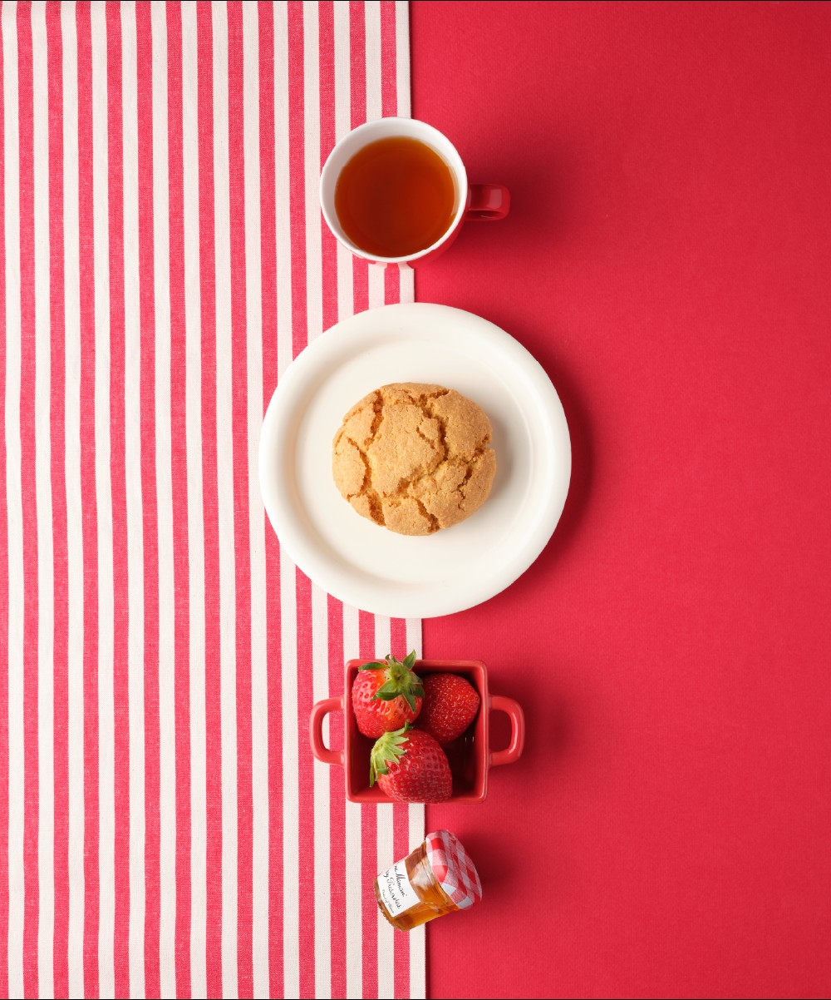
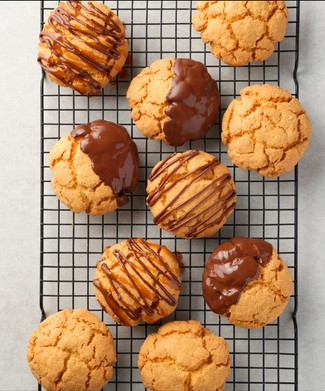
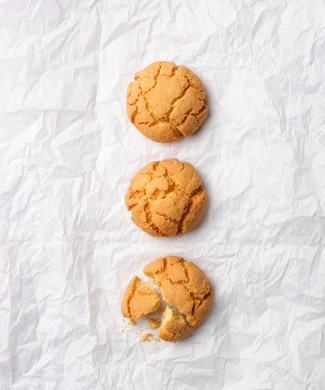
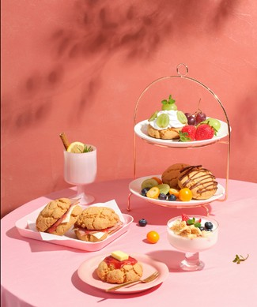

MAKJI
코리아 트래디셔널 & 웰니스
MAKJI ×
Bread Market
한국의 절기와 국산 제철 재료로,
웰니스 베이커리를 다시 쓴다.
매일 바뀌는 시장 데이터 × 절기 조리법 대회
방문 · 참여 · 공유를 연결하는 서비스 기획안
“시세는 매일 바뀌고,
좋은 빵을 만나는 이유도
매일 새로워집니다.”
MAKJI × 기업연계 프로젝트 · Bread Market 기획안
01
자사몰 재방문과 SNS 이벤트 참여 유도
“다시 올 이유”와 “새 사람이 들어올 이유”를 서로 다른 장치로 설계합니다
판매 SKU 집중
1 종 = 100%
ZERO 카스테라 · 교차구매 0%
주문
147 건
5/1~5/24 중 주문 발생 23일
20–24시
28.4%
알림 발송 시점의 참고 근거
기획 문제
주문을 넘어, 자사몰을 탐색할 계기가 필요합니다
재방문
Bread Market
시장 방향과 할인 여부를 확인하고
다른 상품을 탐색할 이유
신규 유입
절기 Instagram 콘테스트
참가자의 공개 게시물과 공유로
브랜드에 새로운 방문자를 연결
쌀 · 팥 · 잡곡 · 견과 · 쑥 × 글루텐프리 · 저당/제로슈거 · 비건의 제품 방향
MAKJI × 기업연계 프로젝트 · Bread Market 기획안
02
서비스 전체 흐름
발견에서 구매 · 참여를 거쳐 신규 유입과 재방문으로 연결됩니다
MAKJI × 기업연계 프로젝트 · Bread Market 기획안
03
오늘의 빵시장
코스피 방향은 할인 대상을, 전일 종가 대비 등락폭은 할인율을 정합니다
KOSPI ▲ 상승
글루텐프리 라인
수입 밀을 쓰지 않은 제품군
정가는 고정
기준 충족 시 할인 · 쿠폰 적용
KOSPI ▼ 하락
그 외 라인
현재 판매 가능 제품 기준
전일 종가 대비 절대 등락폭
| 1.5% 이상 ~ 3.0% 미만 | 3.0% 이상 ~ 4.5% 미만 | 4.5% 이상 |
|---|
| 5% 할인 |
10% 할인 |
20% 할인 |
1.5% 미만은 할인 없음
보합 포함 · 정가 유지
MAKJI × 기업연계 프로젝트 · Bread Market 기획안
04
절기 조리법 대회
참가자의 게시물이 브랜드 유입을 만들고, 브랜드 방문자는 참가자 원 게시물로 이동합니다
Instagram 게시물
참가자 A · 공개 계정 예시

나의 제철 스콘 레시피
@makji 멘션 필수
시즌 해시태그는 홍보용
발표용 목업 · 실제 출품작 아님
↓
↓
수집은 @ 멘션
순위는 Instagram 좋아요
콘테스트 페이지
스콘 카테고리 TOP 3
1

글루텐프리 스콘
참가자 A · 예시
좋아요 수 표시
2

글루텐프리 스콘
참가자 B · 예시
좋아요 수 표시
3

글루텐프리 스콘
참가자 C · 예시
좋아요 수 표시
카드 선택 시 참가자 원 게시물로 이동
24 절기 : 약 15일마다 주제 갱신 · 휴장일 보완 · 절기별 우승작 아카이브 · Highlight 보관
MAKJI × 기업연계 프로젝트 · Bread Market 기획안
05
주요 UX: 행동 단서와 피드백
화면에서 이유를 이해하고, 다음 행동을 선택할 수 있어야 합니다
01
이유 이해
왜 오늘 이 빵이
할인되는가?
시장 방향과 할인 대상
절기 · 제철 재료
할인 여부와 이유 이해
02
구매 · 탐색 전환
오늘 어떤
제품을 볼까?
할인율과 판매 상태
자사몰 상품 딥링크
다른 SKU 탐색
03
참여 유도
내 레시피도
올려볼까?
절기 주제와 @ 멘션 방법
참가자 원 게시물 연결
내 계정의 노출 기회
04
재방문
내일은 무엇이
달라질까?
다음 시장일 할인 변화
관심 상품 알림 · 다음 절기
반복 방문
시장 데이터는 매일성, 절기 콘테스트는 참여와 신규 유입, 알림은 재방문을 담당
MAKJI × 기업연계 프로젝트 · Bread Market 기획안
06
외부데이터의 역할
할인 계산은 KOSPI만 사용하고, 절기 · 날씨 · 환율은 콘텐츠와 맥락 정보로 활용합니다
| 데이터 | 수집 · 정규화 | 가공 · 판정 | 사용자 경험 |
|---|
| KOSPI | 방향 · 전일 대비 등락폭 | 대상 라인 · 할인율 티어 | 오늘의 빵시장 |
| 24 절기 | 날짜 · 세시음식 · 제철 재료 | 시즌 주제 · 콘텐츠 매핑 | 레시피 공지 · 아카이브 |
| 날씨 · 기온 | 기온 · 날씨코드 | 가격 계산 미사용 | 오늘의 맥락 정보 |
| 환율 | 현재 환율 | 가격 계산 미사용 | 정보성 지표 |
| Instagram | @ 멘션 · 작성자 · 좋아요 · 캡션 | 관리자 검수 · 카테고리 랭킹 | 공유 · TOP3 · 아카이브 |
정합성 원칙
코스피의 방향은 대상, 등락폭은 할인율
환율 · 기온은 할인 계산에 반영하지 않음
MAKJI × 기업연계 프로젝트 · Bread Market 기획안
07
구현 구조와 저장소 의존성
출품 저장 · 검수 · 알림 · 성과 계측을 연결하려면 저장소 결정이 선행되어야 합니다
MAKJI × 기업연계 프로젝트 · Bread Market 기획안
08
기대효과와 검증 범위
재방문 · 상품 탐색 · UGC · 신규 유입을 각각 계측합니다
Bread Market
15%
주간 재방문율
파일럿 목표
상품 탐색
20%
Bread Market CTR
기존 PRD 목표
절기 콘테스트
운영 지표
출품 · 승인 · 아카이브 수
UGC 축적 계측
신규 유입
미확정
정의 · 목표치 기업 협의
별도 KPI 필요
프로젝트 산출물
| 산출물 | 범위 |
|---|
| Bread Market | 기획서 · 프로토타입 |
| Bakery ETF | 개인 취향 포트폴리오 UX · 기능 정의 |
| FX Bakery | 환율 프로모션 시나리오 |
| Bread Index | 막지 지수 설계 문서 |
| SNS | 절기 레시피 게시 · 메인 유입 프로토타입 |
MVP 합격선
핵심 파이프라인이 실제로 동작하고, 성과를 계측할 수 있는 상태
MAKJI × 기업연계 프로젝트 · Bread Market 기획안
09
발주 기업과 함께 확정할 사항 및 다음 단계
운영 · 기술의 열린 질문을 닫고, 확정된 설계를 구현과 계측에 맞춥니다
기업 확인 필요
Instagram 프로 계정 · 연동 권한
구매자 한정 참여 여부
좋아요 편중 · 비공개 처리 기준
Cafe24 쿠폰 API · 알림 기준 / 동의
리워드 · 검수 · 반려 기준
품절 SKU 재입고 · 신규 유입 KPI
팀 · 기술 확인 / 제안
저장소 확정 : Supabase 우선 제안
permalink · username 확보 여부
관리자 수동 출품 URL 등록
좋아요 하루 1회 + 즉시 동기화
시세 실패 시 예시 데이터 표시
할인 티어 · 로직의 코드 정합성
이미 확정한 설계
정가 고정 · 할인 / 쿠폰 방식
1.5% 미만 할인 없음
광고는 오늘의 빵시장 직접 유입
사이트 투표 없이 좋아요 순위
해시태그 홍보 · @ 멘션 수집
참가자 원 게시물로 연결
9/14
기획안 발표
핵심 가설 · 데이터 흐름
2 주차
→기반 구축
저장소 · 관리자 승인 큐
3 주차
→연동 · 계측
Cafe24 · 알림 · 동기화
9/30
→최종 발표
프로토타입 · 계측 · 인수인계
MAKJI × 기업연계 프로젝트 · Bread Market 기획안
10